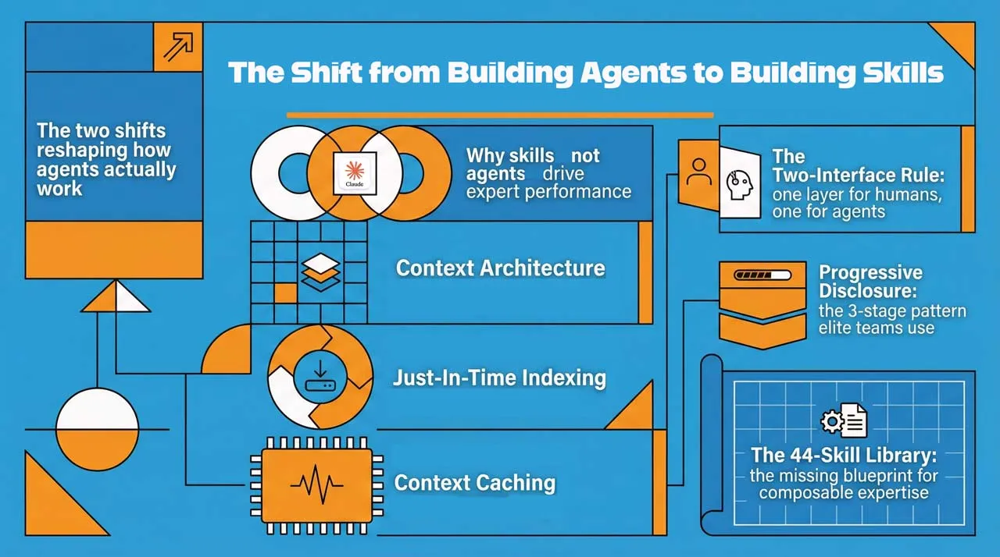

AI Agent Skills
Workforce Platform
Composable, progressive-disclosure skill directories that replace monolithic agents. This is not a generic "AI has skills" project. See the Anthropic Engineering Blog for the open standard.
Architecture Overview
Claude loads the full skill body only when routed to that skill — keeping context windows lean and costs low. This is the core advantage of Claude Agent Skills over monolithic agents.
Claude Agent Skill Standard
Each skill follows the Anthropic open standard:
Each SKILL.md starts with a YAML frontmatter block containing name and description. The description is what Claude reads at routing time — be specific, because this determines whether the skill gets selected. The full skill instructions follow below the frontmatter.
Skill Reference
| Skill | Port | Azure Services | Databricks |
|---|---|---|---|
| Nova | 8001 | AKS, ACR, APIM, Monitor, Key Vault, Blob, Service Bus | MLflow tracking |
| Axiom | 8002 | Blob Storage, Service Bus | Delta Lake, MLflow, Spark |
| Sentinel | 8003 | Azure DevOps, Blob, Monitor | MLflow artefacts |
| Nexus | 8004 | APIM Developer Portal, Blob | — |
| Prometheus | 8005 | Monitor, App Config, Blob | MLflow experiments |
Environment Setup
Copy the example env file and fill in your Azure and Anthropic credentials:
config/.env.example for the full annotated list of required variables.Running Locally
All 5 skills and the orchestrator start automatically. On Windows, double-click deployment/START_UI.bat instead. The browser opens at docs/index.html showing live health status for all services.
Deploying to Azure AKS
Use the Nova skill itself to deploy the other skills — dogfooding the platform:
Nova reads its workflows/Deploy.md, executes the 11-step Azure deployment, and returns the live endpoint.